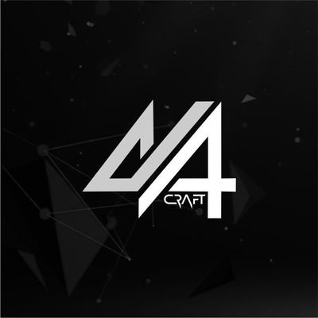

The Origin
I didn't find Chronara through hype. A colleague named Barmz pitched it without promises — just vision. That caught my attention. I researched it, connected with the team, and jumped in on April 6th.
Since then I've been Talking Panda — an admin moderating the TG, organizing X Spaces, and talking about Chronara consistently. More importantly, I bridged my community, 44Craft, with Chronara AI Africa. Through that bridge I've onboarded and educated builders the right way — not just filling seats, but teaching people how to understand the system and produce quality content while staying properly positioned.
By the Numbers
Role & Position
Current Title
Chronara Raids TG — t.me/chronararaids
- Admin-level moderation of the primary TG group
- Organizing and coordinating X Space events
- Briefing and managing space moderators
- Educating community on participation mechanics
- Curating #study-chronara content channel
- Direct onboarding and 1-on-1 guidance via DMs
Chronara Raids — Group Size
Position in Group
The role is a named custom position within Chronara Raids and is not a default Telegram admin tag.
People Guided
Guided from zero — funded wallet via Bybit to MetaMask, connected to Chronara AI platform, registered for airdrop, and completed first token purchase at $11.5. Multiple sessions across May 10–15.
May 10 – May 15, 2026
Confirmed TG, email, and X credentials. Directed to Chronara Raids and guided through airdrop registration and participation flow.
May 25, 2026
Walked through platform setup, wallet connection, and airdrop registration across multiple sessions. Active in #study-chronara learning circle.
May 10 – May 17, 2026
Addressed confusion about token earnings — explained API reward calculation at month-end. Directed to post, interact, and stay active.
May 15, 2026
Distinguished signing vs purchase flow on Chronara. Helped navigate MetaMask transaction request on Ethereum mainnet and clarified NFT mint vs token purchase.
May 13, 2026
Briefed on X Space format, vibe, and structure. Trusted to moderate independently. Airdrop registration completed the following day.
May 25 – May 26, 2026
Community Impact
Education Infrastructure
Beyond individual onboarding, Bamboo established #study-chronara within the 44Craft Discord community as a dedicated educational hub focused on Chronara AI. The initiative served as a bridge between 44Craft and Chronara AI Africa, helping members access structured learning resources, deepen their understanding of the ecosystem, and contribute more effectively. The channel was seeded with purpose-built guides designed to help new members understand the system properly and produce quality content.
X Posts — Full Record
Every post below is an original Chronara AI post published by @bamboo_web3 from April 6 to May 29, 2026. Near-daily cadence with no gaps longer than 2 days. 46 posts and counting.
Partnerships & Ecosystem Building



44Craft × Chronara AI Africa
Established a collaborative bridge between the 44Craft community and Chronara AI Africa focused on education, contributor development, onboarding, and ecosystem growth.
View Partnership Documentation